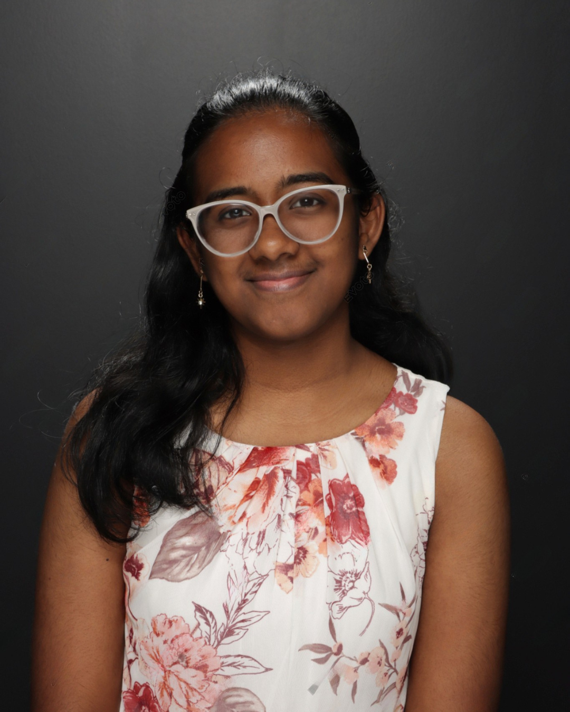

Toggle Mode

About

StudyButterfly
Data Science
Cybersecurity
About Me
Hi, I’m Sarada Sivasailam! — a designer, coder, and content creator with a love for all things creative and intentional.  I'm a rising freshman at the University of Texas at San Antonio, planning to study computer science. From launching digital projects to leading youth initiatives, I’m passionate about building in the spaces where tech meets storytelling. Whether I’m writing code, curating a magazine, or sharing my thoughts online, I’m all about making ideas feel personal and powerful. This site is a little reflection of me — feel free to explore, get inspired, and stay a while.
📠StudyButterfly
📠Data Science
- Graph – Tableau project on graduation metrics
📠Cybersecurity
- Sheets – Vulnerability mapping spreadsheet